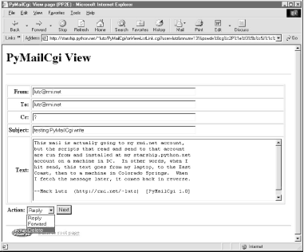
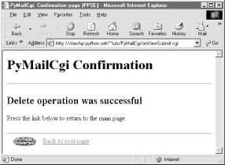

| I l@ve RuBoard |
|
13.5 Reading POP EmailSo far, we've stepped through the path the system follows to send new mail. Let's now see what happens when we try to view incoming POP mail. 13.5.1 The POP Password PageIf you flip back to the main page in Figure 13-2, you'll see a View link; pressing it triggers the script in Example 13-6 to run on the server: Example 13-6. PP2E\Internet\Cgi-Web\PyMailCgi\onRootViewLink.cgi#!/usr/bin/python
##############################################################
# on view link click on main/root html page
# this could almost be a html file because there are likely
# no input params yet, but I wanted to use standard header/
# footer functions and display the site/user names which must
# be fetched; On submission, doesn't send the user along with
# password here, and only ever sends both as URL params or
# hidden fields after the password has been encrypted by a
# user-uploadable encryption module; put html in commonhtml?
##############################################################
# page template
pswdhtml = """
<form method=post action=%s/onViewPswdSubmit.cgi>
<p>
Please enter POP account password below, for user "%s" and site "%s".
<p><input name=pswd type=password>
<input type=submit value="Submit"></form></p>
<hr><p><i>Security note</i>: The password you enter above will be transmitted
over the Internet to the server machine, but is not displayed, is never
transmitted in combination with a username unless it is encrypted, and is
never stored anywhere: not on the server (it is only passed along as hidden
fields in subsequent pages), and not on the client (no cookies are generated).
This is still not totally safe; use your browser's back button to back out of
PyMailCgi at any time.</p>
"""
# generate the password input page
import commonhtml # usual parms case:
user, pswd, site = commonhtml.getstandardpopfields({}) # from module here,
commonhtml.pageheader(kind='POP password input') # from html|url later
print pswdhtml % (commonhtml.urlroot, user, site)
commonhtml.pagefooter( )
This script is almost all embedded HTML: the triple-quoted pswdhtml string is printed, with string formatting, in a single step. But because we need to fetch the user and server names to display on the generated page, this is coded as an executable script, not a static HTML file. Module commonhtml either loads user and server names from script inputs (e.g., appended to the script's URL), or imports them from the mailconfig file; either way, we don't want to hardcode them into this script or its HTML, so an HTML file won't do. Since this is a script, we can also make use of the commonhtml page header and footer routines to render the generated reply page with the common look-and-feel; this is shown in Figure 13-7. Figure 13-7. PyMailCgi view password login pageAt this page, the user is expected to enter the password for the POP email account of the user and server displayed. Notice that the actual password isn't displayed; the input field's HTML specifies type=password, which works just like a normal text field, but shows typed input as stars. (See also Example 11-6 for doing this at a console, and Example 11-23 for doing this in a GUI.) 13.5.2 The Mail Selection List PageAfter filling out the last page's password field and pressing its Submit button, the password is shipped off to the script shown in Example 13-7. Example 13-7. PP2E\Internet\Cgi-Web\PyMailCgi\onViewPswdSubmit.cgi#!/usr/bin/python
# On submit in pop password input window--make view list
import cgi, StringIO, rfc822, string
import loadmail, commonhtml
from secret import encode # user-defined encoder module
MaxHdr = 35 # max length of email hdrs in list
# only pswd comes from page here, rest usually in module
formdata = cgi.FieldStorage( )
mailuser, mailpswd, mailsite = commonhtml.getstandardpopfields(formdata)
try:
newmail = loadmail.loadnewmail(mailsite, mailuser, mailpswd)
mailnum = 1
maillist = []
for mail in newmail:
msginfo = []
hdrs = rfc822.Message(StringIO.StringIO(mail))
for key in ('Subject', 'From', 'Date'):
msginfo.append(hdrs.get(key, '?')[:MaxHdr])
msginfo = string.join(msginfo, ' | ')
maillist.append((msginfo, commonhtml.urlroot + '/onViewListLink.cgi',
{'mnum': mailnum,
'user': mailuser, # data params
'pswd': encode(mailpswd), # pass in url
'site': mailsite})) # not inputs
mailnum = mailnum+1
commonhtml.listpage(maillist, 'mail selection list')
except:
commonhtml.errorpage('Error loading mail index')
This script's main purpose is to generate a selection list page for the user's email account, using the password typed into the prior page (or passed in a URL). As usual with encapsulation, most of the details are hidden in other files:
The maillist list built here is used to create the body of the next page -- a clickable email message selection list. Each generated hyperlink in the list page references a constructed URL that contains enough information for the next script to fetch and display a particular email message. If all goes well, the mail selection list page HTML generated by this script is rendered as in Figure 13-8. If you get as much email as I do, you'll probably need to scroll down to see the end of this page. It looks like Figure 13-9, and follows the common look-and-feel for all PyMailCgi pages, thanks to commonhtml. Figure 13-8. PyMailCgi view selection list page, top Figure 13-9. PyMailCgi view selection list page, bottomIf the script can't access your email account (e.g., because you typed the wrong password), then its try statement handler instead produces a commonly formatted error page. Figure 13-10 shows one that gives the Python exception and details as part of the reply after a genuine exception is caught. Figure 13-10. PyMailCgi login error page 13.5.2.1 Passing state information in URL link parametersThe central mechanism at work in Example 13-7 is the generation of URLs that embed message numbers and mail account information. Clicking on any of the View links in the selection list triggers another script, which uses information in the link's URL parameters to fetch and display the selected email. As mentioned in the prior chapter, because the list's links are effectively programmed to "know" how to load a particular message, it's not too far-fetched to refer to them as smart links -- URLs that remember what to do next. Figure 13-11 shows part of the HTML generated by this script. Figure 13-11. PyMailCgi view list, generated HTMLDid you get all that? You may not be able to read generated HTML like this, but your browser can. For the sake of readers afflicted with human parsing limitations, here is what one of those link lines looks like, reformatted with line breaks and spaces to make it easier to understand: <tr><th><ahref="http://starship.python.net/~lutz/
PyMailCgi/onViewListLink.cgi
?user=lutz&
mnum=66&
pswd=%8cg%c2P%1e%f3%5b%c5J%1c%f0&
site=pop.rmi.net">View</a> 66
<td>test sendurl.py | lutz@rmi.net | Mon Jun 5 17:51:11 2000
PyMailCgi generates fully specified URLs (with server and pathname values imported from a common module). Clicking on the word "View" in the hyperlink rendered from this HTML code triggers the onViewListLink script as usual, passing it all the parameters embedded at the end of the URL: POP username, the POP message number of the message associated with this link, and POP password and site information. These values will be available in the object returned by cgi.FieldStorage in the next script run. Note that the mnum POP message number parameter differs in each link because each opens a different message when clicked, and that the text after <td> comes from message headers extracted with the rfc822 module. The commonhtml module escapes all of the link parameters with the urllib module, not cgi.escape, because they are part of a URL. This is obvious only in the pswd password parameter -- its value has been encrypted, but urllib additionally escapes non-safe characters in the encrypted string per URL convention (that's where all those %xx come from). It's okay if the encryptor yields odd -- even non-printable -- characters, because URL encoding makes them legible for transmission. When the password reaches the next script, cgi.FieldStorage undoes URL escape sequences, leaving the encrypted password string without % escapes. It's instructive to see how commonhtml builds up the smart link parameters. Earlier, we learned how to use the urllib.quote_plus call to escape a string for inclusion in URLs: >>> import urllib
>>> urllib.quote_plus("There's bugger all down here on Earth")
'There%27s+bugger+all+down+here+on+Earth'
Module commonhtml, though, calls the higher-level urllib.urlencode function, which translates a dictionary of name:value pairs into a complete URL parameter string, ready to add after a ? marker in a URL. For instance, here is urlencode in action at the interactive prompt: >>> parmdict = {'user': 'Brian',
... 'pswd': '#!/spam',
... 'text': 'Say no more, squire!'}
>>> urllib.urlencode(parmdict)
'pswd=%23%21/spam&user=Brian&text=Say+no+more,+squire%21'
>>> "%s?%s" % ("http://scriptname.cgi", urllib.urlencode(parmdict))
'http://scriptname.cgi?pswd=%23%21/spam&user=Brian&text=Say+no+more,+squire%21'
Internally, urlencode passes each name and value in the dictionary to the built-in str function (to make sure they are strings) and then runs each one through urllib.quote_plus as they are added to the result. The CGI script builds up a list of similar dictionaries and passes it to commonhtml to be formatted into a selection list page.[2]
In broader terms, generating URLs with parameters like this is one way to pass state information to the next script (along with databases and hidden form input fields, discussed later). Without such state information, the user would have to re-enter the username, password, and site name on every page they visit along the way. We'll use this technique again in the next case study, to generate links that "know" how to fetch a particular database record. Incidentally, the list generated by this script is not radically different in functionality from what we built in the PyMailGui program of Chapter 11. Figure 13-12 shows this strictly client-side GUI's view on the same email list displayed in Figures Figure 13-8 and Figure 13-9. Figure 13-12. PyMailGui displaying the same view listHowever, PyMailGui uses the Tkinter GUI library to build up a user interface instead of sending HTML to a browser. It also runs entirely on the client and downloads mail from the POP server to the client machine over sockets on demand. In contrast, PyMailCgi runs on the server machine and simply displays mail text on the client's browser -- mail is downloaded from the POP server machine to the starship server, where CGI scripts are run. These architecture differences have some important ramifications, which we'll discuss in a few moments. 13.5.2.2 Security protocolsIn onViewPswdSubmit's source code (Example 13-7), notice that password inputs are passed to an encode function as they are added to the parameters dictionary, and hence show up encrypted in hyperlink URLs. They are also URL-encoded for transmission (with % escapes) and are later decoded and decrypted within other scripts as needed to access the POP account. The password encryption step, encode, is at the heart of PyMailCgi's security policy. Beginning in Python 1.6, the standard socket module will include optional support for OpenSSL, an open source implementation of secure sockets that prevents transmitted data from being intercepted by eavesdroppers on the Net. Unfortunately, this example was developed under Python 1.5.2 and runs on a server whose Python did not have secure socket support built in, so an alternative scheme was devised to minimize the chance that email account information could be stolen off the Net in transit. Here's how it works. When this script is invoked by the password input page's form, it gets only one input parameter: the password typed into the form. The username is imported from a mailconfig module installed on the server instead of transmitted together with the unencrypted password (that would be much too easy for malicious users to intercept). To pass the POP username and password to the next page as state information, this script adds them to the end of the mail selection list URLs, but only after the password has been encrypted by secret.encode -- a function in a module that lives on the server and may vary in every location that PyMailCgi is installed. In fact, PyMailCgi was written to not have to know about the password encryptor at all; because the encoder is a separate module, you can provide any flavor you like. Unless you also publish your encoder module, the encoded password shipped with the username won't be of much help to snoopers. That upshot is that normally, PyMailGui never sends or receives both user and password values together in a single transaction unless the password is encrypted with an encryptor of your choice. This limits its utility somewhat (since only a single account username can be installed on the server), but the alternative of popping up two pages -- one for password entry and one for user -- is even more unfriendly. In general, if you want to read your mail with the system as coded, you have to install its files on your server, tweak its mailconfig.py to reflect your account details, and change its secret.py encryptor as desired. One exception: since any CGI script can be invoked with parameters in an explicit URL instead of form field values, and since commonhtml tries to fetch inputs from the form object before importing them from mailconfig, it is possible for any person to use this script to check his or her mail without installing and configuring a copy of PyMailCgi. For example, a URL like the following (but without the linebreak used to make it fit here): http://starship.python.net/~lutz/PyMailCgi/ onViewPswdSubmit.cgi?user=lutz&pswd=asif&site=pop.rmi.net will actually load email into a selection list using whatever user, password, and mail site names are appended. From the selection list, you may then view, reply, forward, and delete email. Notice that at this point in the interaction, the password you send in a URL of this form is not encrypted. Later scripts expect that the password inputs will be sent encrypted, though, which makes it more difficult to use them with explicit URLs (you would need to match the encrypted form produced by the secret module on the server). Passwords are encrypted as they are added to links in the reply page's selection list, and remain encrypted in URLs and hidden form fields thereafter.
13.5.3 The Message View PageBack to our page flow. At this point, we are still viewing the message selection list in Figure 13-8. When we click on one of its generated hyperlinks, the smart URL invokes the script in Example 13-8 on the server, sending the selected message number and mail account information (user, password, and site) as parameters on the end of the script's URL. Example 13-8. PP2E\Internet\Cgi-Web\PyMailCgi\onViewListLink.cgi#!/usr/bin/python
############################################################
# On user click of message link in main selection list;
# cgi.FieldStorage undoes any urllib escapes in the link's
# input parameters (%xx and '+' for spaces already undone);
############################################################
import cgi, rfc822, StringIO
import commonhtml, loadmail
from secret import decode
#commonhtml.dumpstatepage(0)
form = cgi.FieldStorage( )
user, pswd, site = commonhtml.getstandardpopfields(form)
try:
msgnum = form['mnum'].value # from url link
newmail = loadmail.loadnewmail(site, user, decode(pswd))
textfile = StringIO.StringIO(newmail[int(msgnum) - 1]) # don't eval!
headers = rfc822.Message(textfile)
bodytext = textfile.read( )
commonhtml.viewpage(msgnum, headers, bodytext, form) # encoded pswd
except:
commonhtml.errorpage('Error loading message')
Again, most of the work here happens in the loadmail and commonhtml modules, which are listed later in this section (Example 13-12 and Example 13-14). This script adds logic to decode the input password (using the configurable secret encryption module) and extract the selected mail's headers and text using the rfc822 and StringIO modules, just as we did in Chapter 11.[3]
If the message can be loaded and parsed successfully, the result page (shown in Figure 13-13) allows us to view, but not edit, the mail's text. The function commonhtml.viewpage generates a "read-only" HTML option for all the text widgets in this page. Figure 13-13. PyMailCgi view page View pages like this have a pull-down action selection list near the bottom; if you want to do more, use this list to pick an action (Reply, Forward, or Delete), and click on the Next button to proceed to the next screen. If you're just in a browsing frame of mind, click the "Back to root page" link at the bottom to return to the main page, or use your browser's Back button to return to the selection list page. 13.5.3.1 Passing state information in HTML hidden input fieldsWhat you don't see on the view page in Figure 13-13 is just as important as what you do. We need to refer to Example 13-14 for details, but there's something new going on here. The original message number, as well as the POP user and (still encrypted) password information sent to this script as part of the smart link's URL, wind up being copied into the HTML used to create this view page, as the values of "hidden" input fields in the form. The hidden field generation code in commonhtml looks like this: print '<form method=post action="%s/onViewSubmit.cgi">' % urlroot
print '<input type=hidden name=mnum value="%s">' % msgnum
print '<input type=hidden name=user value="%s">' % user # from page|url
print '<input type=hidden name=site value="%s">' % site # for deletes
print '<input type=hidden name=pswd value="%s">' % pswd # pswd encoded
Much like parameters in generated hyperlink URLs, hidden fields in a page's HTML allow us to embed state information inside this web page itself. Unless you view that page's source, you can't see this state information, because hidden fields are never displayed. But when this form's Submit button is clicked, hidden field values are automatically transmitted to the next script along with the visible fields on the form. Figure 13-14 shows the source code generated for a different message's view page; the hidden input fields used to pass selected mail state information are embedded near the top. Figure 13-14. PyMailCgi view page, generated HTMLThe net effect is that hidden input fields in HTML, just like parameters at the end of generated URLs, act like temporary storage areas and retain state between pages and user interaction steps. Both are the Web's equivalent to programming language variables. They come in handy any time your application needs to remember something between pages. Hidden fields are especially useful if you cannot invoke the next script from a generated URL hyperlink with parameters. For instance, the next action in our script is a form submit button (Next), not a hyperlink, so hidden fields are used to pass state. As before, without these hidden fields, users would need to re-enter POP account details somewhere on the view page if they were needed by the next script (in our example, they are required if the next action is Delete). 13.5.3.2 Escaping mail text and passwords in HTMLNotice that everything you see on the message view page in Figure 13-13 is escaped with cgi.escape. Header fields and the text of the mail itself might contain characters that are special to HTML and must be translated as usual. For instance, because some mailers allow you to send messages in HTML format, it's possible that an email's text could contain a </textarea> tag, which would throw the reply page hopelessly out of sync if not escaped. One subtlety here: HTML escapes are important only when text is sent to the browser initially (by the CGI script). If that text is later sent out again to another script (e.g., by sending a reply), the text will be back in its original, non-escaped format when received again on the server. The browser parses out escape codes and does not put them back again when uploading form data, so we don't need to undo escapes later. For example, here is part of the escaped text area sent to a browser during a Reply transaction (use your browser's View Source option to see this live): <tr><th align=right>Text: <td><textarea name=text cols=80 rows=10 readonly> more stuff --Mark Lutz (http://rmi.net/~lutz) [PyMailCgi 1.0] > -----Original Message----- > From: lutz@rmi.net > To: lutz@rmi.net > Date: Tue May 2 18:28:41 2000 > > <table><textarea> > </textarea></table> > --Mark Lutz (http://rmi.net/~lutz) [PyMailCgi 1.0] > > > > -----Original Message----- After this reply is delivered, its text looks as it did before escapes (and exactly as it appeared to the user in the message edit web page): more stuff --Mark Lutz (http://rmi.net/~lutz) [PyMailCgi 1.0] > -----Original Message----- > From: lutz@rmi.net > To: lutz@rmi.net > Date: Tue May 2 18:28:41 2000 > > <table><textarea> > </textarea></table> > --Mark Lutz (http://rmi.net/~lutz) [PyMailCgi 1.0] > > > > -----Original Message----- Did you notice the odd characters in the hidden password field of the generated HTML screen shot (Figure 13-14)? It turns out that the POP password is still encrypted when placed in hidden fields of the HTML. For security, they have to be: values of a page's hidden fields can be seen with a browser's View Source option, and it's not impossible that the text of this page could be intercepted off the Net. The password is no longer URL-encoded when put in the hidden field, though, even though it was when it appeared at the end of the smart link URL. Depending on your encryption module, the password might now contain non-printable characters when generated as a hidden field value here; the browser doesn't care, as long as the field is run through cgi.escape like everything else added to the HTML reply stream. The commonhtml module is careful to route all text and headers through cgi.escape as the view page is constructed. As a comparison, Figure 13-15 shows what the mail message captured in Figure 13-13 looks like when viewed in PyMailGui, the client-side Tkinter-based email tool from Chapter 11. PyMailGui doesn't need to care about things like passing state in URLs or hidden fields (it saves state in Python variables) or escaping HTML and URL strings (there are no browsers, and no network transmission steps once mail is downloaded). It does require Python to be installed on the client, but we'll get into that in a few pages. Figure 13-15. PyMailGui viewer, same message13.5.4 The Message Action PagesAt this point in our hypothetical PyMailCgi web interaction, we are viewing an email message (Figure 13-13) that was chosen from the selection list page. On the message view page, selecting an action from the pull-down list and clicking the Next button invokes the script in Example 13-9 on the server to perform a reply, forward, or delete operation for the selected message. Example 13-9. PP2E\Internet\Cgi-WebPyMaiCgi\onViewSubmit.cgi#!/usr/bin/python
# On submit in mail view window, action selected=(fwd, reply, delete)
import cgi, string
import commonhtml, secret
from externs import pymail, mailconfig
from commonhtml import getfield
def quotetext(form):
"""
note that headers come from the prior page's form here,
not from parsing the mail message again; that means that
commonhtml.viewpage must pass along date as a hidden field
"""
quoted = '\n-----Original Message-----\n'
for hdr in ('From', 'To', 'Date'):
quoted = quoted + '%s: %s\n' % (hdr, getfield(form, hdr))
quoted = quoted + '\n' + getfield(form, 'text')
quoted = '\n' + string.replace(quoted, '\n', '\n> ')
return quoted
form = cgi.FieldStorage( ) # parse form or url data
user, pswd, site = commonhtml.getstandardpopfields(form)
try:
if form['action'].value == 'Reply':
headers = {'From': mailconfig.myaddress,
'To': getfield(form, 'From'),
'Cc': mailconfig.myaddress,
'Subject': 'Re: ' + getfield(form, 'Subject')}
commonhtml.editpage('Reply', headers, quotetext(form))
elif form['action'].value == 'Forward':
headers = {'From': mailconfig.myaddress,
'To': '',
'Cc': mailconfig.myaddress,
'Subject': 'Fwd: ' + getfield(form, 'Subject')}
commonhtml.editpage('Forward', headers, quotetext(form))
elif form['action'].value == 'Delete':
msgnum = int(form['mnum'].value) # or string.atoi, but not eval( )
commonhtml.runsilent( # mnum field is required here
pymail.deletemessages,
(site, user, secret.decode(pswd), [msgnum], 0) )
commonhtml.confirmationpage('Delete')
else:
assert 0, 'Invalid view action requested'
except:
commonhtml.errorpage('Cannot process view action')
This script receives all information about the selected message as form input field data (some hidden, some not) along with the selected action's name. The next step in the interaction depends upon the action selected:
All these actions use data passed in from the prior page's form, but only the Delete action cares about the POP username and password and must decode the password received (it arrives here from hidden form input fields generated in the prior page's HTML). 13.5.4.1 Reply and forwardIf you select Reply as the next action, the message edit page in Figure 13-16 is generated by the script. Text on this page is editable, and pressing this page's Send button again triggers the send mail script we saw in Example 13-4. If all goes well, we'll receive the same confirmation page we got earlier when writing new mail from scratch (Figure 13-4). Figure 13-16. PyMailCgi reply page Forward operations are virtually the same, except for a few email header differences. All of this busy-ness comes "for free," because Reply and Forward pages are generated by calling commonhtml.editpage, the same utility used to create a new mail composition page. Here, we simply pass the utility preformatted header line strings (e.g., replies add "Re:" to the subject text). We applied the same sort of reuse trick in PyMailGui, but in a different context. In PyMailCgi, one script handles three pages; in PyMailGui, one callback function handles three buttons, but the architecture is similar. 13.5.4.2 DeleteSelecting the Delete action on a message view page and pressing Next will cause the onViewSubmit script to immediately delete the message being viewed. Deletions are performed by calling a reusable delete utility function coded in Chapter 11; the call to the utility is wrapped in a commonhtml.runsilent call that prevents print statements in the utility from showing up in the HTML reply stream (they are just status messages, not HTML code). Figure 13-17 shows a delete operation in action. Figure 13-17. PyMailCgi view page, delete selectedAs mentioned, Delete is the only action that uses the POP account information (user, password, and site) that was passed in from hidden fields on the prior (message view) page. By contrast, the Reply and Forward actions format an edit page, which ultimately sends a message to the SMTP server; no POP information is needed or passed. But at this point in the interaction, the POP password has racked up more than a few frequent flyer miles. In fact, it may have crossed phone lines, satellite links, and continents on its journey from machine to machine. This process is illustrated here:
Along the way, scripts have passed the password between pages as both a URL parameter and an HTML hidden input field; either way, they have always passed its encrypted string, and never passed an unencrypted password and username together in any transaction. Upon a Delete request, the password must be decoded here using the secret module before passing it to the POP server. If the script can access the POP server again and delete the selected message, another confirmation page appears, as shown in Figure 13-18. Figure 13-18. PyMailCgi delete confirmationNote that you really should click "Back to root page" after a successful deletion -- don't use your browser's Back button to return to the message selection list at this point, because the delete has changed the relative numbers of some messages in the list. PyMilGui worked around this problem by only deleting on exit, but PyMailCgi deletes mail immediately since there is no notion of "on exit." Clicking on a view link in an old selection list page may not bring up the message you think it should, if it comes after a message that was deleted. This is a property of POP email in general: incoming mail simply adds to the mail list with higher message numbers, but deletions remove mail from arbitrary locations in the list and hence change message numbers for all mail following the ones deleted. Even PyMailGui may get some message numbers wrong if mail is deleted by another program while the GUI is open (e.g., in a second PyMailGui instance). Alternatively, both mailers could delete all email off the server as soon as it is downloaded, such that deletions wouldn't impact POP identifiers (Microsoft Outlook uses this scheme, for instance), but this requires additional mechanisms for storing deleted email persistently for later access. One subtlety: for replies and forwards, the onViewSubmit mail action script builds up a > -quoted representation of the original message, with original "From:", "To:", and "Date:" header lines prepended to the mail's original text. Notice, though, that the original message's headers are fetched from the CGI form input, not by reparsing the original mail (the mail is not readily available at this point). In other words, the script gets mail header values from the form input fields of the view page. Because there is no "Date" field on the view page, the original message's date is also passed along to the action script as a hidden input field to avoid reloading the message. Try tracing through the code in this chapter's listings to see if you can follow dates from page to page. |
| I l@ve RuBoard |
|